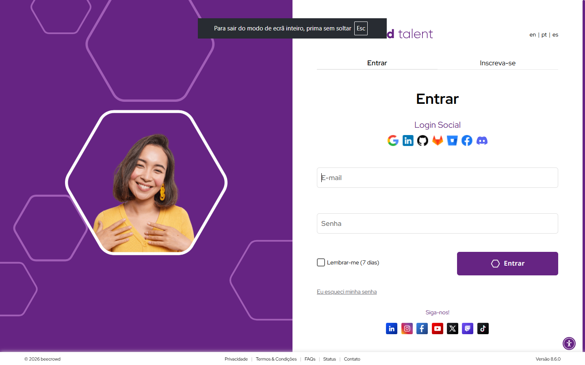
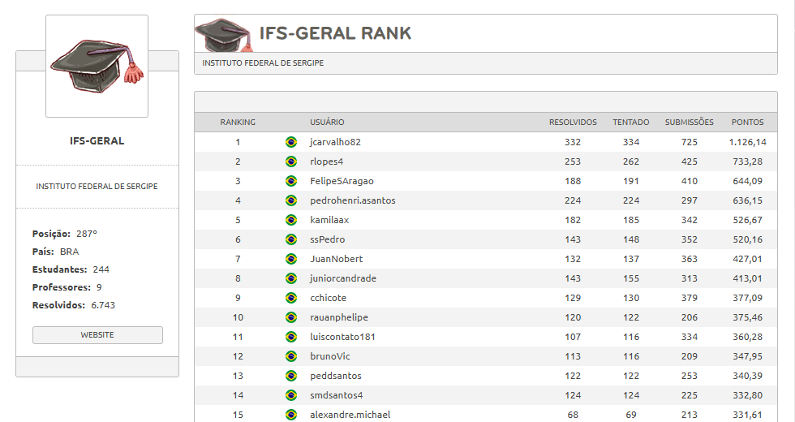
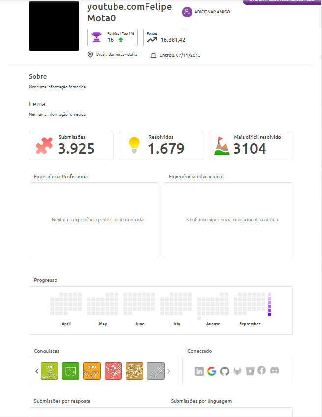

O Beecrowd é uma plataforma de programação competitiva (Online Judge). O usuário escreve soluções algorítmicas e um servidor responde com vereditos como "Accepted" ou "Time Limit Exceeded". Esse núcleo tem a finalidade de verificação técnica, não de entretenimento.

Classificamos o Beecrowd como Gamificação, e não como um jogo ou jogo sério. A experiência central continua sendo a escrita de código real. Elementos de jogo, como pontos e rankings, funcionam apenas como um reforço extrínseco em torno dessa atividade técnica, sem recriá-la por completo.
Ao analisar a motivação, observamos a mecânica de pontos baseada na linguagem de programação. Inicialmente, ela atua de forma puramente extrínseca: o usuário resolve um problema novamente apenas pelos pontos. Contudo, essa dinâmica pode evoluir.
Com a repetição, essa busca por pontos pode se transformar no interesse intrínseco por dominar novas sintaxes, satisfazendo a necessidade de competência e autonomia descrita pela Teoria da Autodeterminação. Os pontos deixam de ser a meta e viram apenas um feedback de progresso.
A Teoria do Fluxo busca a imersão equilibrando desafio e habilidade. No Beecrowd, um iniciante que acessa problemas de Grafos corre risco severo de ansiedade. Um veterano preso a problemas básicos sentirá tédio. Para mitigar isso, o sistema categoriza questões do nível 1 ao 10.
Entretanto, o sistema atual não possui recomendação automática de problemas. A escolha do nível continua sendo manual. Ou seja, a categorização fornece a estrutura, mas o usuário precisa se autorregular constantemente para se manter na Zona de Fluxo, o que é uma limitação real.

Pelo framework MDA, analisamos o Ranking. O sistema permite filtrar classificações por instituição, país e empresa. A visualização institucional aproxima o aluno de seus pares reais, estimulando fortemente a dinâmica de comparação social e refino de código.
A mecânica de Badges, com seus emblemas históricos e temporários, favorece o colecionismo. A principal Estética gerada é a de Expressão: o perfil do usuário se converte em uma vitrine técnica, um portfólio visual consultável tanto por colegas quanto pelo mercado.

O sistema evita o anti-padrão da "Pointsification" superficial porque seus pontos medem competências (hard skills) verdadeiras, frequentemente usadas por recrutadores através do Beecrowd Talent Cloud. Há uma conexão real entre a pontuação e a empregabilidade.
O principal risco diagnosticado é o ranqueamento institucional mal calibrado. Expor alunos iniciantes nas últimas posições de sua própria faculdade pode causar desmotivação crônica. Como correção, propomos visualizar apenas posições relativas (quem está logo acima ou abaixo).
Aplicando os critérios vistos em aula: sim, vale a pena. Primeiro, dominar lógica exige repetição e a gamificação ajuda a consolidar esse hábito. Segundo, o sistema já possui métricas de sucesso cristalinas (Accepted vs Wrong Answer) independentes da camada lúdica.
Atualmente, o sistema não recompensa o aluno que submete códigos melhores após já ter passado de fase. Propomos criar o "Selo de Refinamento", um reconhecimento visual, não pontuado, concedido a quem otimiza seu tempo de execução voluntariamente.
Essa mecânica estimula a estética de Descoberta e Desafio técnico. Ela prioriza a eficiência e a qualidade do código (legibilidade e tempo), não apenas o "funcionar". Concluímos que a gamificação não faz milagres, mas atua como um poderoso amplificador da educação.